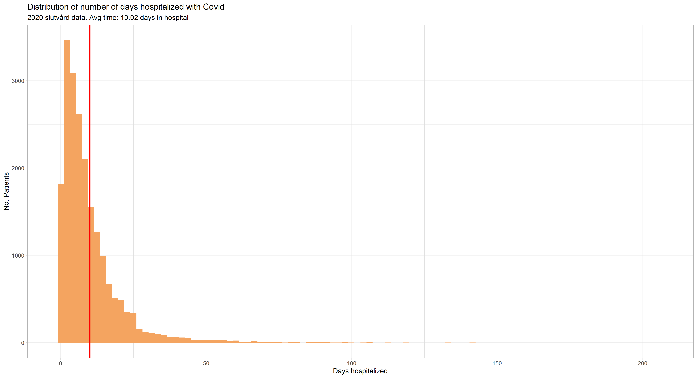
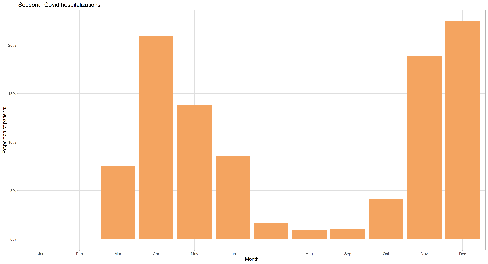
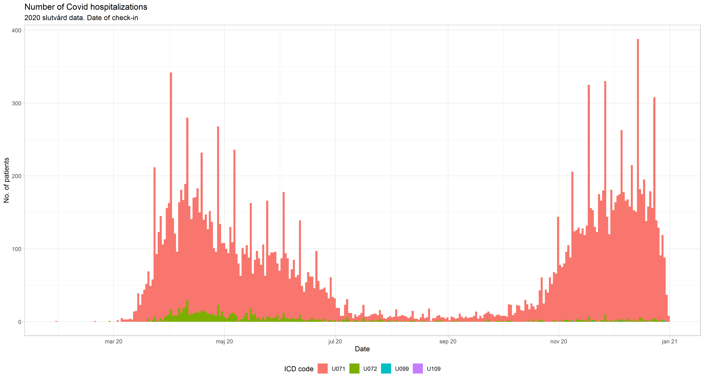
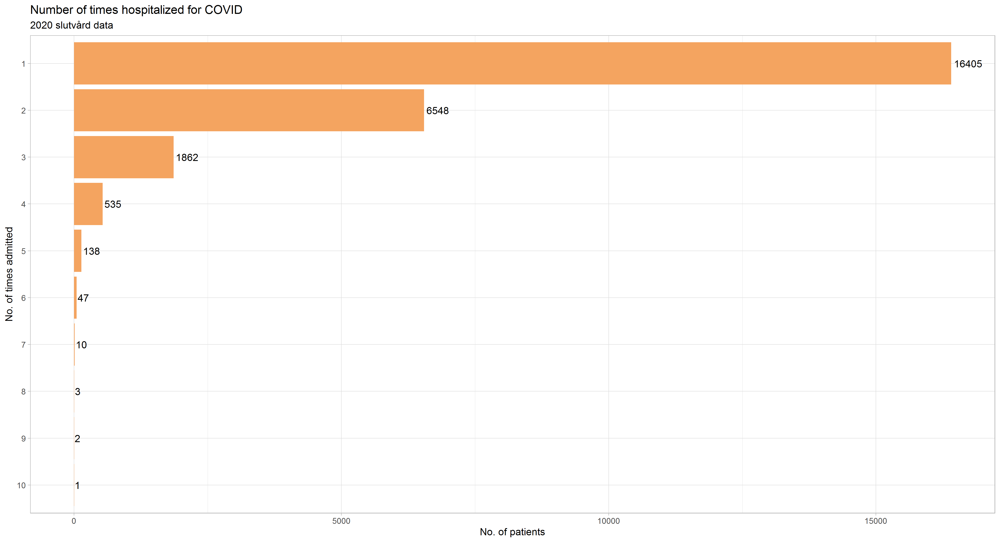

8 COVID-19
8.1 Slutvård data
Slutvård data from Socialstyrelsen contains, among other data items, the primary ICD diagnosis for patients who have stayed at least one night in a hospital. As 2020 is covered in our sample, we can look at some patterns with COVID-19 diagnoses - the when, who, and where of hospitalizations in Sweden due to COVID-19. Using a list of ICD diagnosis codes, we can identify which patients were diagnosed with COVID-19 using the following criteria:
ICD 10 code is equal to one of the following: U071, U072, U089, U099, U109, U119, U129, ZV100
Next, we can look at the following few graphs to give an idea of the data, as well as illustrate some patterns.
A first question may be: How many days did patients spend in the hospital in 2020 due to COVID?

Above we see a histogram of the number of days patients were hospitalized with a primary diagnosis of COVID-19. The distribution is heavily left-skewed, with the average number of days a patient spent in the hospital being 10.02 days.
Below, we can look at the proportion of hospital stays due to COVID-19 by month in 2020. Two distinct peaks are observed in the data.

While a monthly proportion may be interesting per se, simply looking at the number of cases by data may give a better view. Below looks at the unique hospital stays during 2020, filled in with the proportion of each ICD code. The ICD code “U071” is by far the most common code in the data.

8.1.1 Data considerations
Looking at the ICD codes in the Slutvård data, we see that individuals may have multiple entries each year for hospital stays. Upon further examination, the vast majority of these “double entries” are back-to-back checkins. In other words, an individual seems to be released from the hospital and then checks back in the very same day, creating two (or more if repeated) entries. While these revolving door hospital stays could possibly be just that, the prevalence of these entries suggest a different mechanism at play - most likely a patient has changed wards or departments. For example, a patient may be admitted to emergency services for initial COVID-19 symptoms, but then transferred to an Intensive Care Ward, or a recovery ward, which would create three admissions.
Below tallies the number hospital entries patients had for COVID-19.

In the majority of cases, patients show having only one hospital entry during the year.